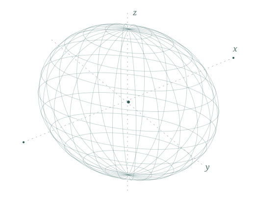

Vector spaces, beyond coordinates
벡터공간: 좌표보다 먼저 연산
A PERSONAL MATHEMATICS ARCHIVE
수학을 읽고,
설명하고, 기록합니다.
정의에서 시작해 예와 반례를 살피고, 증명으로 이해를 다집니다.
수학을 공부하며 정리하는 노트와 강의 계획을 모았습니다.

알고 있는 것을 정확히 설명할 수 있는지,
익숙한 정리의 가정을 놓치고 있지는 않은지.
학부 수학을 다시 읽으며 이해의 빈틈을 채우고 있습니다. 선형대수학을 시작으로 해석학, 대수학, 기하학과 확률론을 공부하고, 핵심 개념을 제 언어로 설명하는 강의를 준비합니다.
이 공간에는 정의와 정리, 증명, 예와 반례를 함께 기록합니다. 완성된 해설만큼, 다시 생각해 보아야 할 질문도 소중히 남기려 합니다.
정의, 증명, 그리고 반례.
짧은 주제별 해설을 차곡차곡 모읍니다.
벡터공간: 좌표보다 먼저 연산
기저와 좌표의 유일성
점별수렴과 균등수렴의 차이
현재 노트는 검토와 보완을 위한 해설 초안입니다.
증명을 따라 읽는 데서,
직접 설명하는 데까지.
Reading Axler
벡터공간에서 선형사상, 내적공간과 스펙트럼 정리까지.
정의의 의미와 증명의 구조를 따라가는 30일 학습·강의 계획.
과목별 학습 계획을 위한 참고문헌.
개념과 증명을 함께 읽습니다.
解析概論 정본
실수 · 연속성 · 미분과 적분
Complex Analysis
정칙함수 · 코시 이론 · 유수
Measure and Integral 2nd ed.
측도 · 르베그 적분 · 수렴 정리
Ordinary Differential Equations and Dynamical Systems
존재와 유일성 · 선형계 · 안정성
A First Course in Abstract Algebra
군 · 환 · 체
Topology
연속성 · 연결성 · 콤팩트성
Elementary Differential Geometry
곡선 · 곡면 · 곡률
A First Course in Probability 10th ed.
조건부확률 · 확률변수 · 극한 정리